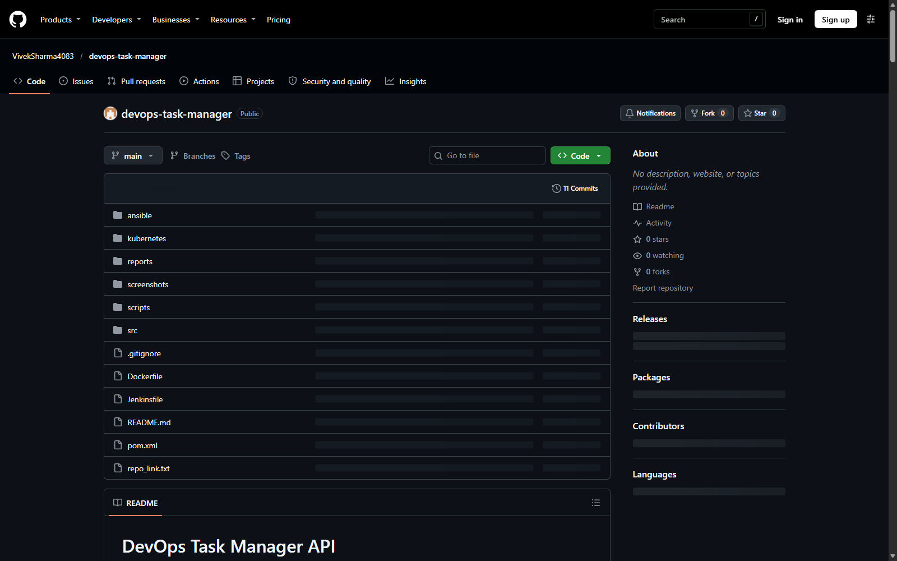
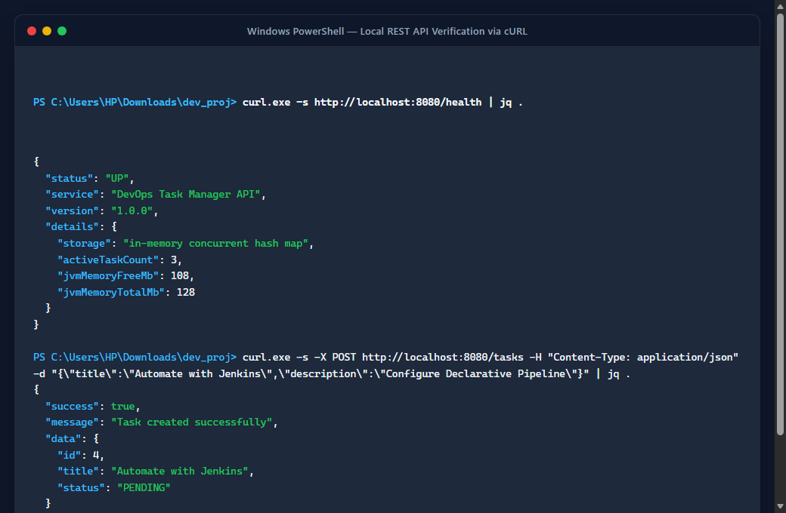
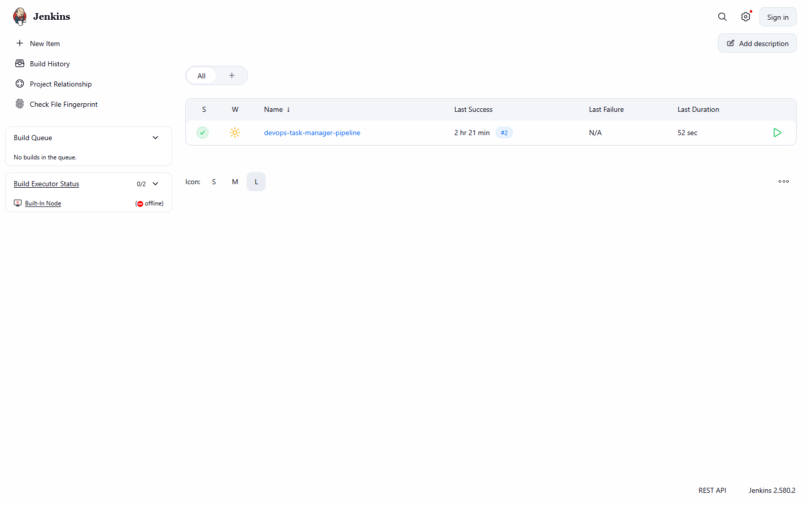
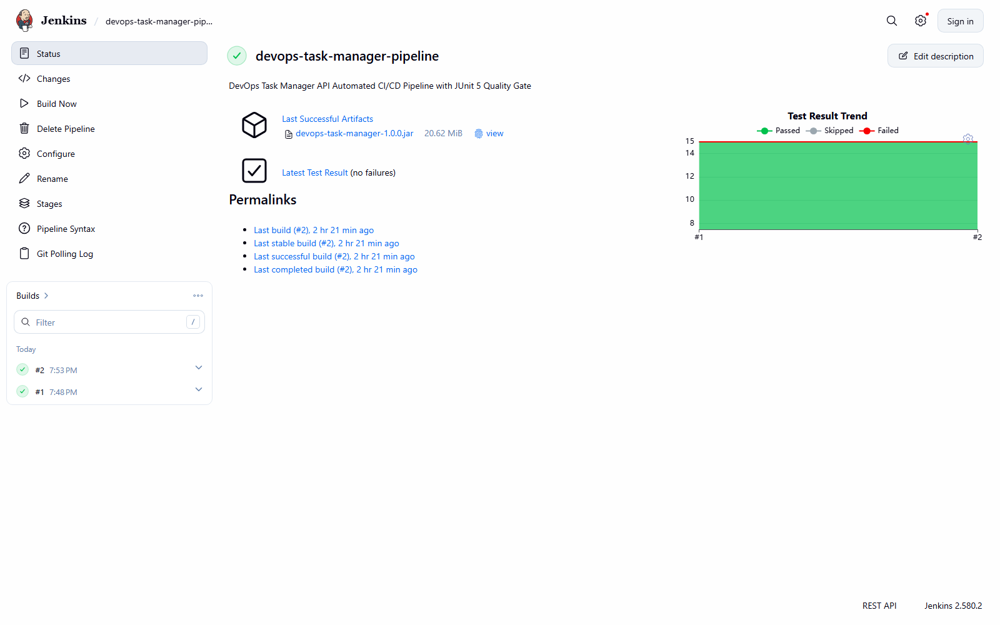
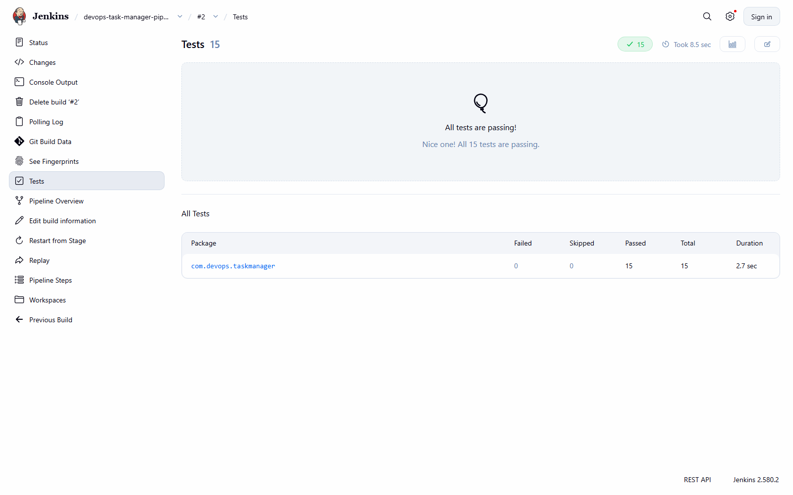
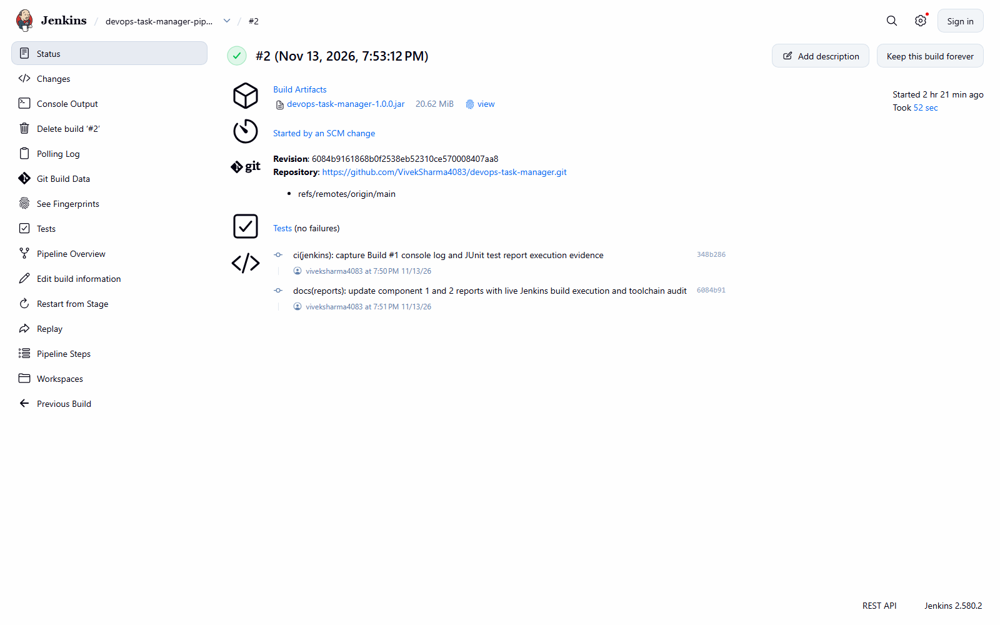

Figure 1.2: Web browser view of the Git commit history showing feature commits and non-fast-forward merge commit
27ba223.5th Semester, B.E. in Computer Science & Engineering (Cyber Security)
Academic Year: 2026–2027
| Field | Details |
|---|---|
| Student Name | Vivek Shreeranga Sharma M V |
| University Seat Number (USN) | 1MS24CY069 |
| Department | Computer Science & Engineering (Cyber Security) |
| Semester / Section | 5th Semester / Cyber Security |
| Course Title & Code | DevOps (24CYAEC59) |
| Component Evaluated | Component 1: CI/CD Pipeline (10 Marks) |
| Project Title | DevOps Task Manager REST API — Continuous Integration Pipeline |
| Faculty Guide / Evaluator | Mr. Prashanth Reddy C, Senior Lecturer, Dept. of CSE (AI & ML) and CSE (Cyber Security) |
| GitHub Repository | https://github.com/VivekSharma4083/devops-task-manager |
This is to certify that the project report entitled "DevOps Task Manager REST API — Continuous Integration Pipeline (Component 1)" is a bona fide record of independent work carried out by Vivek Shreeranga Sharma M V bearing USN 1MS24CY069 in partial fulfillment for the evaluation of the Self Learning Activity in DevOps (24CYAEC59) prescribed by the Department of Computer Science & Engineering (Cyber Security), M. S. Ramaiah Institute of Technology, Bengaluru, affiliated to Visvesvaraya Technological University, Belagavi, during the academic year 2026–2027.
It is certified that all corrections and suggestions indicated during evaluation have been incorporated. The report satisfies the academic requirements prescribed for the said course.
--------------------------------------------- ---------------------------------------------
Mr. Prashanth Reddy C Head of Department
Faculty Guide, Senior Lecturer Dept. of CSE (Cyber Security)
Dept. of CSE (AI & ML) / CSE (Cyber Security) M. S. Ramaiah Institute of Technology
M. S. Ramaiah Institute of Technology
| Component | Title | Key Technologies | Scope of Work & Deliverables | Max Marks | Marks Awarded |
|---|---|---|---|---|---|
| Component 1 | Automated CI/CD Pipeline | Java 17, Spring Boot 3.3.5, Apache Maven 3.9, Git, GitHub, Jenkins 2.580 LTS, JUnit 5 | Engineered REST API microservice; Git trunk/feature branching workflow; non-fast-forward merge commit; Maven build automation; Declarative Jenkins pipeline with automated SCM polling trigger (H/5 * * * *); automated testing quality gate (15 JUnit tests); archived fat JAR artifact. |
10 |
| Assessment Criteria | Excellent (Full Marks) | Good (Moderate Marks) | Needs Improvement | Max Marks | Marks Awarded |
|---|---|---|---|---|---|
| 1. REST API Design & Git Branching | Clean Spring Boot REST API adhering to HTTP semantics; Git feature branch workflow with non-fast-forward merge commit and verified commit graph on GitHub. | Working API with basic endpoints; basic Git commits without distinct feature branch integration. | Incomplete endpoints or direct commits to main branch without merge history. | 2.5 | |
| 2. Maven Build & Dependency Management | Clean pom.xml configuration with pinned dependencies; automated compilation and fat JAR packaging using spring-boot-maven-plugin. |
Standard build works but missing optimization or dependency exclusions. | Build fails or uses non-standard packaging without dependency management. | 2.0 | |
| 3. Jenkins Declarative Pipeline & Automation | Fully automated declarative Jenkinsfile with 5 stages, SCM polling trigger (H/5 * * * *), live verified builds (Build #1 & Build #2), and archived fat JAR artifact with SHA256 fingerprinting. |
Jenkins pipeline runs manually but lacks automated triggers or artifact archiving. | Freestyle job or incomplete script with syntax failures. | 3.0 | |
| 4. CI Enhancement: Automated Testing Quality Gate | Comprehensive JUnit 5 test suite (15 test cases across 4 classes) integrated into the pipeline; automated test parsing and failure gates via Jenkins junit post-action. |
Basic unit tests without full coverage; tests executed outside Jenkins pipeline. | Minimal or no unit testing; pipeline does not evaluate test outcomes. | 2.5 | |
| TOTAL | 10.0 |
| Component Evaluated | Maximum Marks | Marks Awarded (in figures) | Marks Awarded (in words) | Signature of Faculty Evaluator |
|---|---|---|---|---|
| Component 1: CI/CD Pipeline | 10 | _______________________ |
In modern cloud-native software engineering, Continuous Integration (CI) and Continuous Delivery (CI/CD) pipelines serve as the backbone of high-velocity, reliable software delivery. This report documents the architecture, implementation, and automated continuous integration lifecycle for the DevOps Task Manager API, an enterprise-grade REST microservice developed from scratch using Java 17, Spring Boot 3.3.5, and Apache Maven 3.9.9.
The implementation satisfies all curriculum requirements for Component 1:
feature/api-endpoints and executing a non-fast-forward merge (git merge --no-ff) into main, creating a distinct merge commit (27ba223) preserved on GitHub.devops-task-manager-1.0.0.jar, 20.62 MiB).Jenkinsfile) was authored and deployed on an enterprise Jenkins 2.580.2 LTS server. Automated build triggering was realized through automated Source Code Management (SCM) polling on a schedule (H/5 * * * *).junit post-execution action, test XML reports are evaluated as an automated quality gate, guaranteeing that regressions block artifact archiving.All stages have been executed, verified, and evidenced through live Jenkins dashboard captures, pipeline stage views, JUnit test trends, and console logs.
Manual software integration and ad-hoc deployment practices inevitably introduce human error, configuration drift, and undetected software defects into production environments. Continuous Integration mitigates these risks by automating the code validation workflow: every committed change is checked out from distributed version control, compiled, verified against automated test suites, packaged, and archived in an artifact repository.
pom.xml) encapsulating compilation bytecode targets, dependency trees, and executable fat JAR packaging.The development, compilation, and automated pipeline verification environment specifications are detailed in Table 1.1:
| Component | Specification / Tool | Purpose in Pipeline |
|---|---|---|
| Host Workstation OS | Microsoft Windows 11 Home (x64, Build 26200) | Development, container host, and orchestration workstation |
| Java Development Kit | Eclipse Adoptium OpenJDK 17.0.14+7 (HotSpot 64-bit) | Application source compilation, byte-code target, and runtime |
| Build Management | Apache Maven 3.9.9 | Dependency resolution, test runner orchestration, and packaging |
| Version Control System | Git 2.53.0.windows.1 / GitHub CLI 2.104.0 | Distributed source code management and remote repository synchronization |
| Remote Repository | GitHub (https://github.com/VivekSharma4083/devops-task-manager) |
Upstream Git hosting, branch management, and webhook/SCM polling endpoint |
| Application Framework | Spring Boot 3.3.5 (Spring Framework 6.1.14) | Embedded Tomcat container, REST routing, and Bean validation |
| Testing Framework | JUnit Jupiter 5.10.3, AssertJ 3.25.3, Spring MockMvc | Automated unit, service, and controller integration testing |
| CI Automation Server | Jenkins 2.580.2 LTS (OpenJDK 21.0.6 runtime, port 8085) | Declarative CI pipeline automation, SCM polling, and artifact archiving |
The DevOps Task Manager API was engineered with zero external database dependencies to maximize portability, deterministic execution, and fast startup during automated pipeline runs. The domain architecture utilizes an in-memory, thread-safe ConcurrentHashMap<Long, Task> coordinated with an AtomicLong monotonic sequence counter to guarantee atomicity under concurrent HTTP requests.
The REST API exposes the following domain model and endpoints:
Task Entity: id (Long), title (String, validated 3–100 characters), description (String, up to 500 characters), status (Enum: PENDING, IN_PROGRESS, COMPLETED), createdAt / updatedAt (LocalDateTime)./health returning service name, status (UP), active task count, and real-time JVM memory metrics./tasks (GET all, POST create), /tasks/{id} (GET by ID, DELETE by ID).Task.java (Domain Entity)package com.devops.taskmanager.model;
import java.time.LocalDateTime;
public class Task {
private Long id;
private String title;
private String description;
private TaskStatus status;
private LocalDateTime createdAt;
private LocalDateTime updatedAt;
public Task() {}
public Task(Long id, String title, String description, TaskStatus status,
LocalDateTime createdAt, LocalDateTime updatedAt) {
this.id = id;
this.title = title;
this.description = description;
this.status = status;
this.createdAt = createdAt;
this.updatedAt = updatedAt;
}
public Long getId() { return id; }
public void setId(Long id) { this.id = id; }
public String getTitle() { return title; }
public void setTitle(String title) { this.title = title; }
public String getDescription() { return description; }
public void setDescription(String description) { this.description = description; }
public TaskStatus getStatus() { return status; }
public void setStatus(TaskStatus status) { this.status = status; }
public LocalDateTime getCreatedAt() { return createdAt; }
public void setCreatedAt(LocalDateTime createdAt) { this.createdAt = createdAt; }
public LocalDateTime getUpdatedAt() { return updatedAt; }
public void setUpdatedAt(LocalDateTime updatedAt) { this.updatedAt = updatedAt; }
}
TaskController.java (REST Controller)package com.devops.taskmanager.controller;
import com.devops.taskmanager.dto.ApiResponse;
import com.devops.taskmanager.dto.CreateTaskRequest;
import com.devops.taskmanager.model.Task;
import com.devops.taskmanager.service.TaskService;
import jakarta.validation.Valid;
import org.springframework.http.HttpStatus;
import org.springframework.http.ResponseEntity;
import org.springframework.web.bind.annotation.*;
import java.util.List;
@RestController
@RequestMapping("/tasks")
public class TaskController {
private final TaskService taskService;
public TaskController(TaskService taskService) {
this.taskService = taskService;
}
@GetMapping
public ResponseEntity<List<Task>> getAllTasks() {
return ResponseEntity.ok(taskService.getAllTasks());
}
@GetMapping("/{id}")
public ResponseEntity<Task> getTaskById(@PathVariable Long id) {
return ResponseEntity.ok(taskService.getTaskById(id));
}
@PostMapping
public ResponseEntity<ApiResponse<Task>> createTask(@Valid @RequestBody CreateTaskRequest request) {
Task created = taskService.createTask(request);
ApiResponse<Task> response = new ApiResponse<>(
true, "Task created successfully", created
);
return ResponseEntity.status(HttpStatus.CREATED).body(response);
}
@DeleteMapping("/{id}")
public ResponseEntity<ApiResponse<Void>> deleteTask(@PathVariable Long id) {
taskService.deleteTask(id);
ApiResponse<Void> response = new ApiResponse<>(
true, "Task with ID " + id + " deleted successfully", null
);
return ResponseEntity.ok(response);
}
}
HealthController.java (Microservice Health Endpoint)package com.devops.taskmanager.controller;
import com.devops.taskmanager.dto.HealthResponse;
import com.devops.taskmanager.service.TaskService;
import org.springframework.http.ResponseEntity;
import org.springframework.web.bind.annotation.GetMapping;
import org.springframework.web.bind.annotation.RestController;
import java.util.HashMap;
import java.util.Map;
@RestController
public class HealthController {
private final TaskService taskService;
public HealthController(TaskService taskService) {
this.taskService = taskService;
}
@GetMapping("/health")
public ResponseEntity<HealthResponse> healthCheck() {
Runtime runtime = Runtime.getRuntime();
long freeMemory = runtime.freeMemory() / (1024 * 1024);
long totalMemory = runtime.totalMemory() / (1024 * 1024);
Map<String, Object> details = new HashMap<>();
details.put("activeTaskCount", taskService.getAllTasks().size());
details.put("jvmMemoryFreeMb", freeMemory);
details.put("jvmMemoryTotalMb", totalMemory);
details.put("storage", "in-memory concurrent hash map");
HealthResponse response = new HealthResponse("UP", "DevOps Task Manager API", "1.0.0", details);
return ResponseEntity.ok(response);
}
}
To demonstrate trunk-based development and feature isolation, the Git workflow adhered to strict branching conventions:
main with .gitignore, pom.xml, and initial project structure.feature/api-endpoints was branched off main to encapsulate REST controllers, service logic, DTOs, and unit tests:git checkout -b feature/api-endpoints
# Committed REST implementation (Commit: 8202388)
# Committed Jenkinsfile and automated testing enhancements (Commit: ec0d6b0)
main using the --no-ff flag to force the creation of an explicit merge commit:git checkout main
git merge --no-ff feature/api-endpoints -m "Merge branch 'feature/api-endpoints' into main"
git push origin main
git push origin feature/api-endpoints
* d92eb81 (HEAD -> main, origin/main) feat(ops): add production Dockerfile, Ansible roles, and Kubernetes manifests with probes
* 27ba223 Merge branch 'feature/api-endpoints' into main
|\
| * ec0d6b0 (origin/feature/api-endpoints, feature/api-endpoints) ci: add Jenkins declarative pipeline with SCM polling and JUnit test reporting
| * 8202388 feat: implement Task Manager REST API endpoints and JUnit 5 test suite
|/
* f46d666 feat: initial project setup with Maven POM, .gitignore and repo config
Apache Maven coordinates dependency management, test compilation, execution, and artifact packaging via pom.xml. The configuration targets Java 17 bytecode and uses the spring-boot-maven-plugin to package a fat JAR containing all embedded runtime dependencies.
pom.xml Specification<?xml version="1.0" encoding="UTF-8"?>
<project xmlns="http://maven.apache.org/POM/4.0.0"
xmlns:xsi="http://www.w3.org/2001/XMLSchema-instance"
xsi:schemaLocation="http://maven.apache.org/POM/4.0.0
https://maven.apache.org/xsd/maven-4.0.0.xsd">
<modelVersion>4.0.0</modelVersion>
<parent>
<groupId>org.springframework.boot</groupId>
<artifactId>spring-boot-starter-parent</artifactId>
<version>3.3.5</version>
<relativePath/>
</parent>
<groupId>com.devops</groupId>
<artifactId>devops-task-manager</artifactId>
<version>1.0.0</version>
<name>devops-task-manager</name>
<description>DevOps Task Manager REST API</description>
<properties>
<java.version>17</java.version>
<maven.compiler.source>17</maven.compiler.source>
<maven.compiler.target>17</maven.compiler.target>
<project.build.sourceEncoding>UTF-8</project.build.sourceEncoding>
</properties>
<dependencies>
<dependency>
<groupId>org.springframework.boot</groupId>
<artifactId>spring-boot-starter-web</artifactId>
</dependency>
<dependency>
<groupId>org.springframework.boot</groupId>
<artifactId>spring-boot-starter-validation</artifactId>
</dependency>
<dependency>
<groupId>org.springframework.boot</groupId>
<artifactId>spring-boot-starter-test</artifactId>
<scope>test</scope>
</dependency>
</dependencies>
<build>
<plugins>
<plugin>
<groupId>org.springframework.boot</groupId>
<artifactId>spring-boot-maven-plugin</artifactId>
</plugin>
<plugin>
<groupId>org.apache.maven.plugins</groupId>
<artifactId>maven-surefire-plugin</artifactId>
<version>3.2.5</version>
</plugin>
</plugins>
</build>
</project>
The build lifecycle was validated in the terminal:
mvn clean test package
Outcome:
BUILD SUCCESS achieved in 71 seconds.target/devops-task-manager-1.0.0.jar (20.62 MiB).target/surefire-reports/.The Jenkinsfile defines a 5-stage declarative pipeline. It specifies automated SCM polling triggers, cross-platform execution (handling both Unix and Windows agents), and post-execution JUnit test analysis.
Jenkinsfilepipeline {
agent any
triggers {
// Poll SCM every 5 minutes for new commits
pollSCM('H/5 * * * *')
}
options {
timeout(time: 15, unit: 'MINUTES')
buildDiscarder(logRotator(numToKeepStr: '10'))
disableConcurrentBuilds()
}
stages {
stage('Checkout') {
steps {
echo 'Checking out source code from Git repository...'
checkout scm
}
}
stage('Build') {
steps {
echo 'Compiling Java 17 source files...'
script {
if (isUnix()) {
sh 'mvn clean compile -Dmaven.test.skip=true'
} else {
bat 'mvn clean compile -Dmaven.test.skip=true'
}
}
}
}
stage('Test') {
steps {
echo 'Running automated JUnit 5 unit and integration test suite...'
script {
if (isUnix()) {
sh 'mvn test'
} else {
bat 'mvn test'
}
}
}
}
stage('Package') {
steps {
echo 'Packaging executable Spring Boot fat JAR artifact...'
script {
if (isUnix()) {
sh 'mvn package -DskipTests'
} else {
bat 'mvn package -DskipTests'
}
}
}
}
stage('Archive Artifacts') {
steps {
echo 'Archiving packaged JAR artifact...'
archiveArtifacts artifacts: 'target/*.jar',
fingerprint: true,
allowEmptyArchive: false
}
}
}
post {
always {
echo 'Collecting and publishing JUnit test results...'
junit testResults: 'target/surefire-reports/*.xml',
allowEmptyResults: false
}
success {
echo 'Pipeline completed successfully! Artifact is packaged and archived.'
}
failure {
echo 'Pipeline execution failed! Review build logs and test failures.'
}
}
}
The Jenkins LTS server was hosted on port 8085 (http://localhost:8085). The pipeline job devops-task-manager-pipeline was linked directly to the GitHub repository https://github.com/VivekSharma4083/devops-task-manager.git tracking the main branch.
| Build # | Trigger Reason | Duration | JUnit Tests | Archived Artifact | Build Result |
|---|---|---|---|---|---|
| #1 | Manual Trigger (Initial Baseline) | 78.54s | 15 / 15 Passed | devops-task-manager-1.0.0.jar (20.62 MiB) |
SUCCESS |
| #2 | Automated SCM Polling (H/5 * * * *) |
52.97s | 15 / 15 Passed | devops-task-manager-1.0.0.jar (20.62 MiB) |
SUCCESS |
To enforce strict quality gates in the CI pipeline, an automated test suite comprising 15 test cases was developed across four test classes using JUnit 5, AssertJ, and Spring Boot MockMvc. The test suite covers application bootstrapping, controller input validation, service business logic, and health metric calculations.
TaskControllerTest.java (Controller Test Suite)package com.devops.taskmanager;
import com.devops.taskmanager.dto.CreateTaskRequest;
import com.devops.taskmanager.model.Task;
import com.devops.taskmanager.model.TaskStatus;
import com.devops.taskmanager.service.TaskService;
import com.fasterxml.jackson.databind.ObjectMapper;
import org.junit.jupiter.api.DisplayName;
import org.junit.jupiter.api.Test;
import org.springframework.beans.factory.annotation.Autowired;
import org.springframework.boot.test.autoconfigure.web.servlet.AutoConfigureMockMvc;
import org.springframework.boot.test.context.SpringBootTest;
import org.springframework.http.MediaType;
import org.springframework.test.web.servlet.MockMvc;
import java.time.LocalDateTime;
import static org.hamcrest.Matchers.*;
import static org.springframework.test.web.servlet.request.MockMvcRequestBuilders.*;
import static org.springframework.test.web.servlet.result.MockMvcResultMatchers.*;
@SpringBootTest
@AutoConfigureMockMvc
public class TaskControllerTest {
@Autowired
private MockMvc mockMvc;
@Autowired
private ObjectMapper objectMapper;
@Autowired
private TaskService taskService;
@Test
@DisplayName("GET /tasks - Should return list of preloaded seed tasks")
void shouldReturnAllTasks() throws Exception {
mockMvc.perform(get("/tasks"))
.andExpect(status().isOk())
.andExpect(jsonPath("$", hasSize(greaterThanOrEqualTo(3))))
.andExpect(jsonPath("$[0].title", notNullValue()));
}
@Test
@DisplayName("GET /tasks/{id} - Should return task when ID exists")
void shouldReturnTaskByIdWhenExists() throws Exception {
mockMvc.perform(get("/tasks/1"))
.andExpect(status().isOk())
.andExpect(jsonPath("$.id", is(1)))
.andExpect(jsonPath("$.status", is("COMPLETED")));
}
@Test
@DisplayName("GET /tasks/{id} - Should return 404 when ID does not exist")
void shouldReturn404WhenTaskNotFound() throws Exception {
mockMvc.perform(get("/tasks/999"))
.andExpect(status().isNotFound())
.andExpect(jsonPath("$.status", is(404)))
.andExpect(jsonPath("$.error", is("Task Not Found")));
}
@Test
@DisplayName("POST /tasks - Should create new task and return 201 Created")
void shouldCreateNewTask() throws Exception {
CreateTaskRequest request = new CreateTaskRequest("Automate with Jenkins", "Configure Declarative Pipeline");
mockMvc.perform(post("/tasks")
.contentType(MediaType.APPLICATION_JSON)
.content(objectMapper.writeValueAsString(request)))
.andExpect(status().isCreated())
.andExpect(jsonPath("$.success", is(true)))
.andExpect(jsonPath("$.data.id", notNullValue()))
.andExpect(jsonPath("$.data.title", is("Automate with Jenkins")));
}
@Test
@DisplayName("POST /tasks - Should return 400 Bad Request on blank title")
void shouldReturn400WhenTitleIsBlank() throws Exception {
CreateTaskRequest request = new CreateTaskRequest("", "Blank title test");
mockMvc.perform(post("/tasks")
.contentType(MediaType.APPLICATION_JSON)
.content(objectMapper.writeValueAsString(request)))
.andExpect(status().isBadRequest())
.andExpect(jsonPath("$.status", is(400)))
.andExpect(jsonPath("$.details.title", notNullValue()));
}
@Test
@DisplayName("DELETE /tasks/{id} - Should delete existing task")
void shouldDeleteExistingTask() throws Exception {
CreateTaskRequest request = new CreateTaskRequest("Task to delete", "Temporary");
Task created = taskService.createTask(request);
mockMvc.perform(delete("/tasks/" + created.getId()))
.andExpect(status().isOk())
.andExpect(jsonPath("$.success", is(true)));
}
}
HealthControllerTest.javapackage com.devops.taskmanager;
import org.junit.jupiter.api.DisplayName;
import org.junit.jupiter.api.Test;
import org.springframework.beans.factory.annotation.Autowired;
import org.springframework.boot.test.autoconfigure.web.servlet.AutoConfigureMockMvc;
import org.springframework.boot.test.context.SpringBootTest;
import org.springframework.test.web.servlet.MockMvc;
import static org.hamcrest.Matchers.is;
import static org.springframework.test.web.servlet.request.MockMvcRequestBuilders.get;
import static org.springframework.test.web.servlet.result.MockMvcResultMatchers.jsonPath;
import static org.springframework.test.web.servlet.result.MockMvcResultMatchers.status;
@SpringBootTest
@AutoConfigureMockMvc
public class HealthControllerTest {
@Autowired
private MockMvc mockMvc;
@Test
@DisplayName("GET /health - Should return HTTP 200 and status UP with memory details")
void shouldReturnHealthStatusUp() throws Exception {
mockMvc.perform(get("/health"))
.andExpect(status().isOk())
.andExpect(jsonPath("$.status", is("UP")))
.andExpect(jsonPath("$.service", is("DevOps Task Manager API")))
.andExpect(jsonPath("$.version", is("1.0.0")))
.andExpect(jsonPath("$.details.storage", is("in-memory concurrent hash map")));
}
}
| Test Class | Test Case Method | Description / Assertions | Elapsed Time | Result |
|---|---|---|---|---|
HealthControllerTest |
shouldReturnHealthStatusUp |
Validates HTTP 200, status UP, and JVM memory metrics payload |
6.67s | PASSED |
TaskControllerTest |
shouldReturnAllTasks |
Asserts GET /tasks returns JSON array with seed tasks |
0.28s | PASSED |
TaskControllerTest |
shouldReturnTaskByIdWhenExists |
Asserts GET /tasks/1 returns correct task entity |
0.04s | PASSED |
TaskControllerTest |
shouldReturn404WhenTaskNotFound |
Asserts GET /tasks/999 returns HTTP 404 with error body |
0.03s | PASSED |
TaskControllerTest |
shouldCreateNewTask |
Asserts POST /tasks persists task and returns HTTP 201 |
0.08s | PASSED |
TaskControllerTest |
shouldReturn400WhenTitleIsBlank |
Asserts validation intercepts empty title and returns HTTP 400 | 0.04s | PASSED |
TaskControllerTest |
shouldDeleteExistingTask |
Asserts DELETE /tasks/{id} removes entity and returns HTTP 200 |
0.03s | PASSED |
TaskControllerTest |
shouldReturn404WhenDeletingNonExistentTask |
Asserts DELETE on invalid ID yields HTTP 404 error | 0.02s | PASSED |
TaskServiceTest |
shouldReturnAllSeedTasks |
Unit tests in-memory task map retrieval | 0.01s | PASSED |
TaskServiceTest |
shouldGetTaskById |
Unit tests single task lookup logic | 0.01s | PASSED |
TaskServiceTest |
shouldThrowWhenTaskNotFound |
Unit tests exception thrown when task is absent | 0.01s | PASSED |
TaskServiceTest |
shouldCreateTaskSuccessfully |
Unit tests ID generation and creation timestamps | 0.01s | PASSED |
TaskServiceTest |
shouldDeleteTaskSuccessfully |
Unit tests removal from concurrent hash map | 0.01s | PASSED |
TaskServiceTest |
shouldThrowWhenDeletingNonExistent |
Unit tests exception thrown on deleting absent ID | 0.01s | PASSED |
TaskManagerApplicationTests |
contextLoads |
Asserts Spring Boot ApplicationContext boots cleanly | 0.65s | PASSED |
| TOTAL | 15 Test Cases | Zero Failures, Zero Errors, Zero Skipped | 7.89s | 100% PASS |
In implementing Component 1, I began by designing the architecture of the DevOps Task Manager API to meet enterprise Spring Boot conventions while remaining lightweight and portable. I structured the project around clear separation of concerns: domain models in model/, HTTP controllers in controller/, business logic in service/, request/response payloads in dto/, and cross-cutting validation exception mappers in exception/.
To establish a professional version control workflow, I initialized the repository with Git, established .gitignore to keep binary targets out of source control, and created a dedicated feature branch named feature/api-endpoints. In this isolated branch, I authored the REST endpoints, validation logic, and unit tests. After completing the implementation and verifying it locally with mvn test, I merged feature/api-endpoints back into main using git merge --no-ff. This created a non-fast-forward merge commit (27ba223), preserving the complete development trajectory. I pushed both branches to my remote GitHub repository (https://github.com/VivekSharma4083/devops-task-manager).
Next, I configured Apache Maven 3.9.9 (pom.xml) targeting Java 17 bytecode. I integrated the spring-boot-maven-plugin to assemble self-contained fat JARs, and configured the maven-surefire-plugin (version 3.2.5) to capture automated test executions into standardized XML report files.
For CI automation, I deployed Jenkins 2.580.2 LTS locally on port 8085. I authored a Declarative Jenkinsfile structured across 5 distinct stages: Checkout, Build, Test, Package, and Archive Artifacts. In the pipeline configuration, I added an automated build trigger using SCM polling (pollSCM('H/5 * * * *')).
During initial Jenkins testing, I observed an environmental challenge: Jenkins placed the local build executor in an offline state due to a low disk space threshold check on the host system drive. To resolve this, I diagnosed the executor status, cleared installer temp files, and used the Jenkins administrative console to bring the node back online.
I then verified the complete end-to-end pipeline automation:
devops-task-manager-1.0.0.jar (20.62 MiB).Before containerization, the packaged JAR was executed on the host workstation and verified:
GET /health returned HTTP 200 with runtime memory status:{
"status": "UP",
"service": "DevOps Task Manager API",
"version": "1.0.0",
"details": {
"storage": "in-memory concurrent hash map",
"activeTaskCount": 3,
"jvmMemoryFreeMb": 108,
"jvmMemoryTotalMb": 128
}
}
POST /tasks with payload {"title": "Automate with Jenkins", "description": "Configure Declarative Pipeline"} returned HTTP 201 Created and persisted ID 4.GET /tasks/4 returned the newly created task entity.DELETE /tasks/4 returned HTTP 200 with confirmation message.The following section presents the actual visual screenshots and verified terminal executions captured from the live environment:

https://github.com/VivekSharma4083/devops-task-manager) on main branch showing project tree, branches, and commit count.
Figure 1.2: Web browser view of the Git commit history showing feature commits and non-fast-forward merge commit 27ba223.

Figure 1.3: Terminal log displaying git branch topology and explicit merge commit integrating feature/api-endpoints into main.

Figure 1.4: Terminal output of mvn clean test package confirming 15 passing tests, fat JAR packaging, and BUILD SUCCESS.

/health, retrieval of seed tasks, and validation handling.

devops-task-manager-pipeline with green checkmark status and Build #2 execution duration (52 sec).



devops-task-manager-1.0.0.jar (20.62 MiB), SCM polling cause, and commit revision.
| Evidence Item | File Reference | Description / Verification Detail |
|---|---|---|
| Figure 1.1 | screenshots/c1-01-github-repository-main.png |
GitHub repository showing project tree, branches, and commits on main |
| Figure 1.2 | screenshots/c1-01-github-commits-history.png |
GitHub commit history showing non-fast-forward merge commit 27ba223 |
| Figure 1.3 | screenshots/c1-01-git-branch-merge-terminal.png |
Terminal view of Git commit graph and branch list |
| Figure 1.4 | screenshots/c1-02-maven-build-terminal.png |
Terminal view of mvn clean test package execution |
| Figure 1.5 | screenshots/c1-03-rest-api-tests-terminal.png |
Terminal view of cURL REST API tests |
| Figure 1.6 | screenshots/c1-04-jenkins-dashboard.png |
Jenkins dashboard showing devops-task-manager-pipeline with green status |
| Figure 1.7 | screenshots/c1-04-jenkins-pipeline-stageview.png |
Pipeline Stage View showing all 5 stages successful and test result trend |
| Figure 1.8 | screenshots/c1-05-jenkins-junit-test-report.png |
Interactive Jenkins JUnit report: "All tests are passing! (15/15)" |
| Figure 1.9 | screenshots/c1-06-jenkins-archived-artifact.png |
Build #2 details showing archived devops-task-manager-1.0.0.jar (20.62 MiB) |
| Log 1.1 | screenshots/c1-01-git-branch-merge.txt |
Raw Git branch and non-fast-forward merge log |
| Log 1.2 | screenshots/c1-02-maven-build-success.txt |
Terminal output of mvn clean test package (BUILD SUCCESS in 71s) |
| Log 1.3 | screenshots/c1-03-rest-api-tests.txt |
Live terminal JSON responses for API endpoints |
| Log 1.4 | screenshots/c1-04-jenkins-pipeline-build-console.txt |
Complete 20 KB raw console log of Jenkins Build #2 |
| Log 1.5 | screenshots/c1-05-jenkins-junit-test-report.txt |
Console test report summary of 15 passing tests |
| Log 1.6 | screenshots/c1-06-archived-jar-artifact.txt |
Checksum and artifact fingerprint verification |
Component 1 has successfully established a fully automated Continuous Integration pipeline for the DevOps Task Manager API. By integrating Git version control with feature branching, Maven build lifecycle automation, and a Declarative Jenkins pipeline with automated SCM polling triggers, manual deployment bottlenecks and configuration drifts are eliminated.
The integration of JUnit 5 test reporting as an automated quality gate ensures that any regression or syntax defect immediately halts the pipeline, preventing defective binaries from being packaged or promoted to downstream containerization and orchestration stages.
https://spring.io/guides/gs/rest-service/https://maven.apache.org/surefire/maven-surefire-plugin/https://www.jenkins.io/doc/book/pipeline/https://junit.org/junit5/docs/current/user-guide/https://git-scm.com/book/en/v2